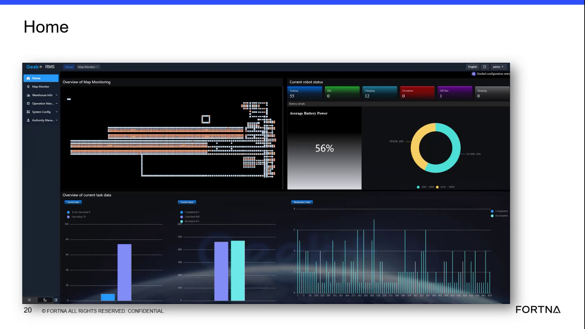

| Procedure ID | proc_access_rms_web_ui_via_site_argus_ip_and_verify_overview_v1 |
|---|---|
| Title | Access RMS web application via site Argus server IP and verify the RMS overview screen loads |
| Procedure Type | diagnostic |
| Primary Role | L1_support |
| Support Safe | Yes |
| Capability Tags | fleet_system_status |
| Access Surface | rms_ui |
| Audience Roles | L1_support |
| Failure Pattern Tags | None |
| Validation Status | needs_sme_review |
| Merge Status | source_finalized |
Verify that the RMS / fleet status web UI is reachable from a supported workstation using the site-provided unique IP, that login succeeds with the provided username/password, and that the RMS overview screen loads. Use this as the first connectivity/login check when troubleshooting RMS web availability.
Use when you need a first-pass check that the RMS web application is reachable and that authentication leads to the RMS overview screen (the initial landing/overview page).

Responsible role: L1_support
Instruction:
From a supported workstation, open a web browser and navigate to the site-provided RMS web location using the unique IP address for the RMS service.
Expected result:
The RMS web application landing page loads (i.e., the browser reaches the RMS web location).
Stop or Escalate If:
Responsible role: L1_support
Instruction:
On the RMS login page, enter the username and password provided for RMS access, then submit/login.
Expected result:
Login succeeds and the session proceeds to the RMS overview screen.
Stop or Escalate If:
Responsible role: L1_support
Instruction:
After login, verify you are on the RMS overview screen (the screen described as “this is what you will see… the overview screen”).
Expected result:
The RMS overview screen is displayed.
Stop or Escalate If: